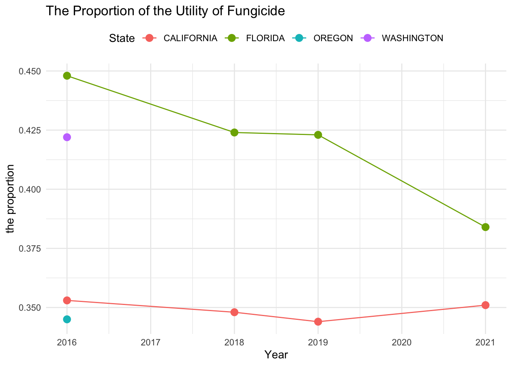
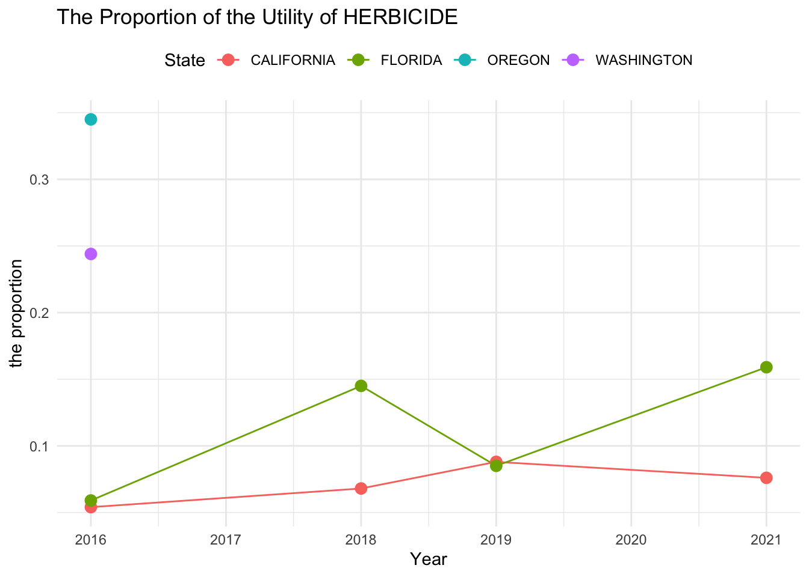
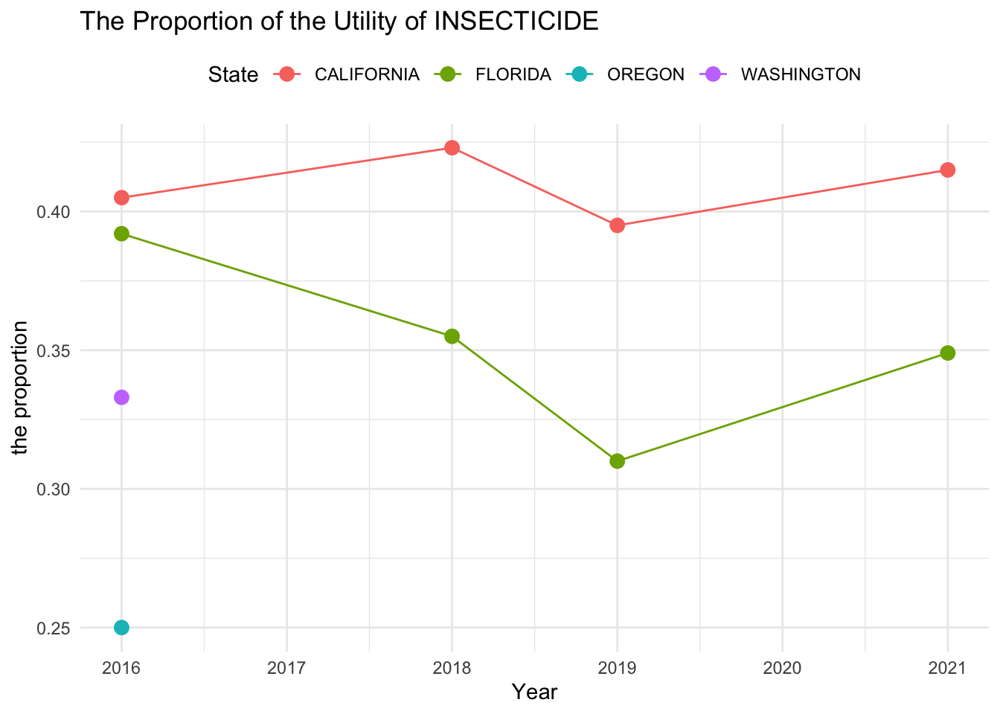
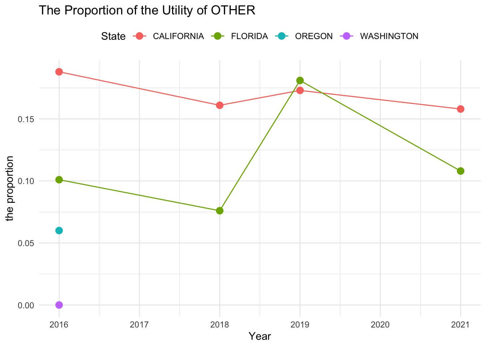
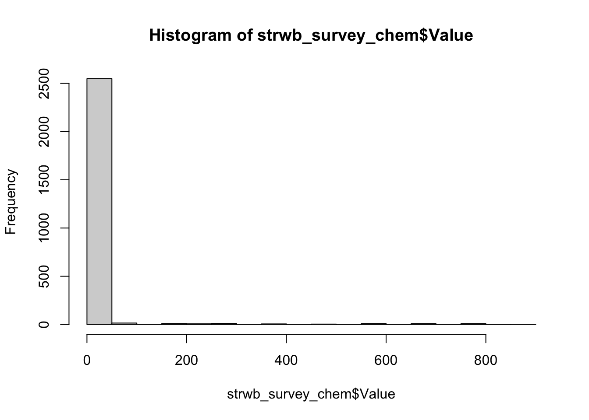
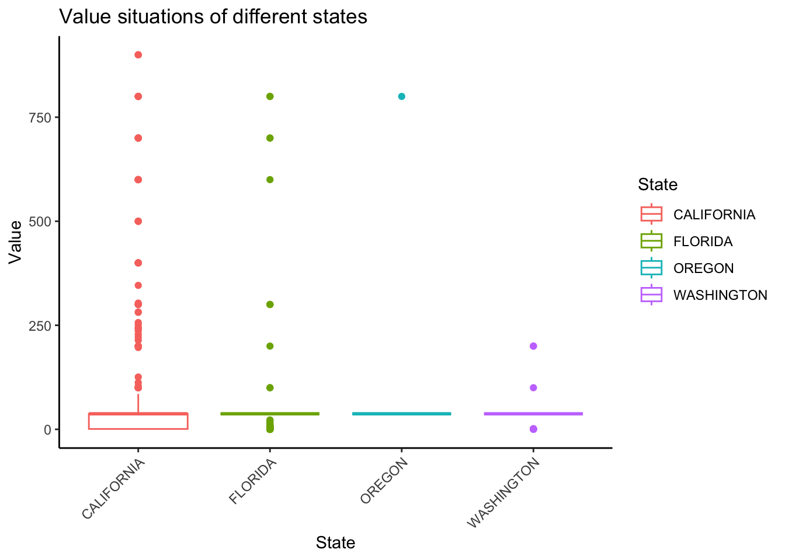
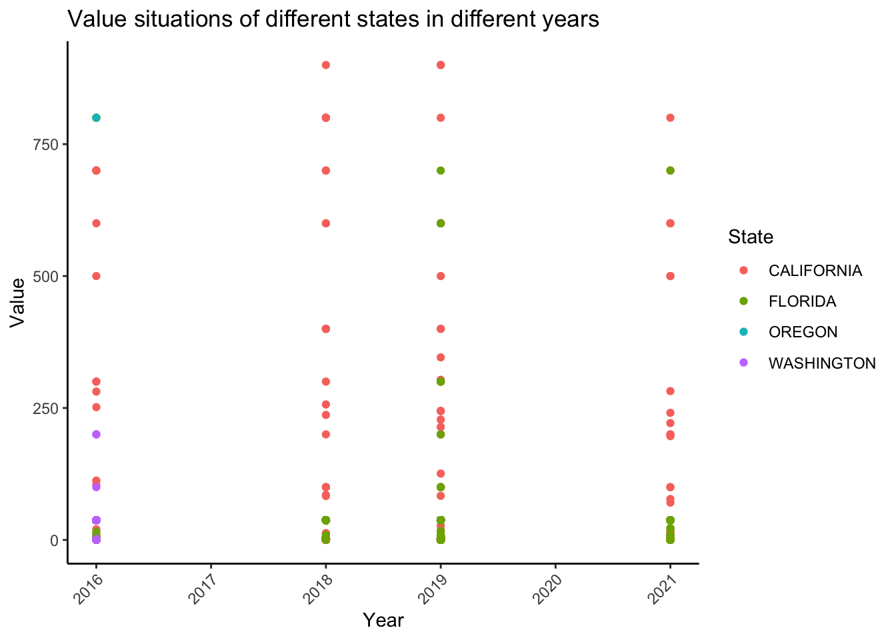
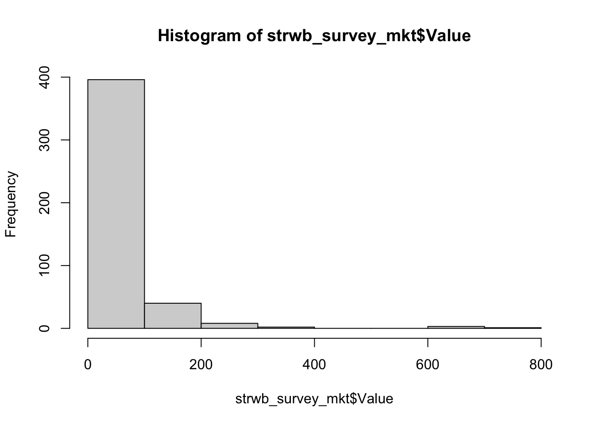
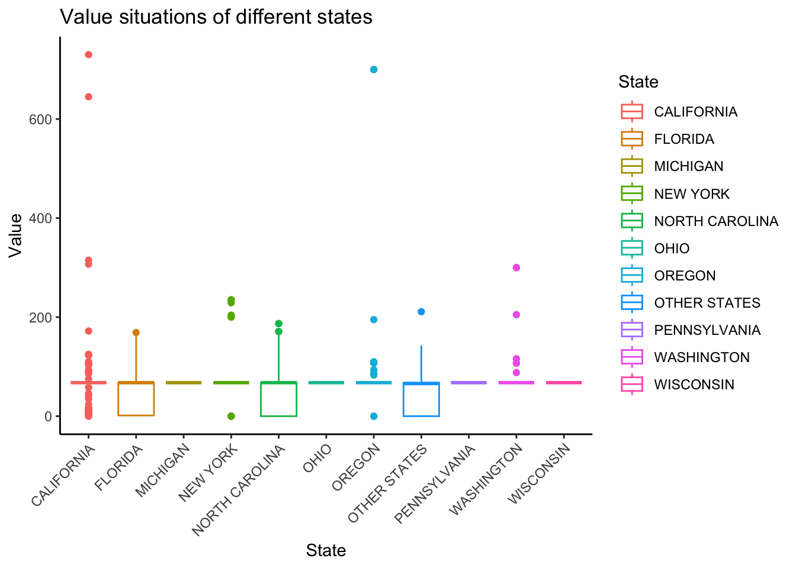
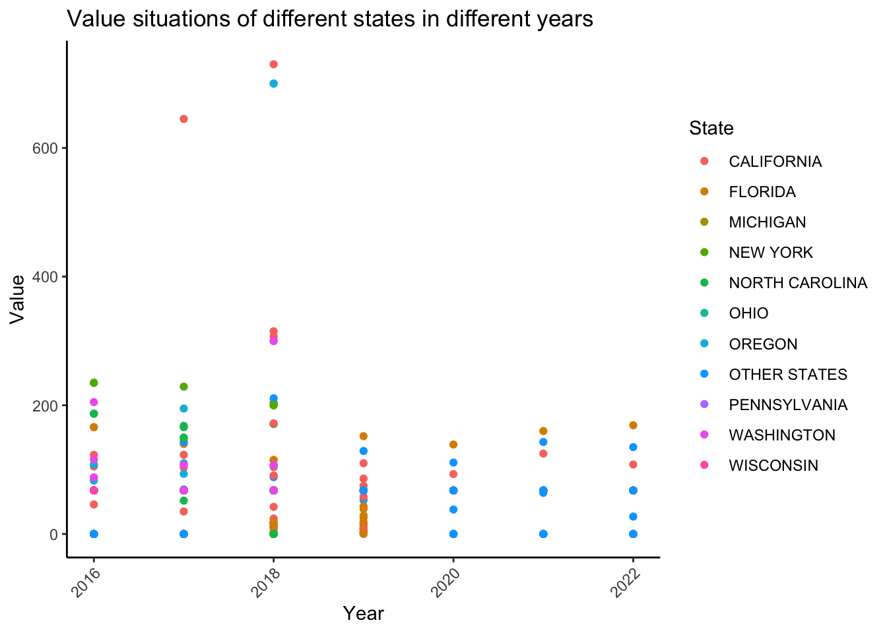

# View(strwb_census)
# View(strwb_survey)
# View(strwb_survey_mkt)
# View(strwb_survey_chem)Stawberries: exploratory data analysis
Assignment
Using our class discussions and this document as a starting point, produce an EDA report. The report should describe the data itself so that readers understand the data sources used in the report and how you cleaned and organized the data for analysis.
The sections below suggest how the report might be organized. The report should be succinct, communicating the information that you believe will be helpful to someone doing a fuller analysis of the data or using the data for model building. Implementation details should be included in commentary that is included in code.
Sections of the document as it was originally presented in class have been commented so that you can see them in the code.
Data acquisition and assessment
- Data sources
- Assumptions and motivations
Data cleaning and organization
Outline the approach taked to clean and organize the data.
References
Material about strawberries
WHO says strawberries may not be so safe for you–2017March16
Pesticides + poison gases = cheap, year-round strawberries 2019March20
Multistate Outbreak of Hepatitis A Virus Infections Linked to Fresh Organic Strawberries-2022March5
Technical references
In their handbook “An introduction to data cleaning with R” by Edwin de Jonge and Mark van der Loo, de Jonge and van der Loo go into detail about specific data cleaning isssues and how to handle them in R.
“Problems, Methods, and Challenges in Comprehensive Data Cleansing” by Heiko Müller and Johann-Christoph Freytag is a good companion to the de Jonge and van der Loo handbook, offering additional insights.
Initial questions
- Initial questions about strawberries, the data, and about the work you are undertaking.
The questions: (1) What is the degree of harmfulness of each chemical, which chemicals are more harmful and which are relatively harmless? (2) How are strawberries sold in different states and in different years? What about the use of chemicals? (3) Whether there is a correlation between different variables, e.g., whether strawberry sales are related to the year or the state in which they are located, etc.
The data
Describe the source and original condition of the data: organization, problems with the data that needed to be addressed and so on. Cite data sources.
The data set for this assignment has been selected from: USDA_NASS
The data have been stored on NASS here: USDA_NASS_strawb_2023SEP19
Make relevant observations in the document and in your code about data. Add commentary to the code so that anthoer analysts could use or extend your code.
Discusss missing data, inclding how you handled it. Be careful to point out where NA’s are being produced during processing and are not data missing in the original data.
Where it is relevant, include information of how you have organized the data for analysis. It might, for example, be helpful to know that there is both agricultural census data and survey data. It might be helpful to discuss data that appears to be redundant between these two sources.
Make sure you include details in your discussion and in your code about other data and information you used in your work. Cite sources and provide detail that would allow another analyst to reproduce your work.
EDA
Once the data has been cleaned and organized, you must conduct your own EDA. Be sure to include a discussion of your analysis of the chemical information, including citations for data and other information you have used. Visualizations should play a key role in your analysis. Plots should be labeled and captioned.
These references have been left in the document to help while you are writing. Cite those you use and drop the rest from the final document.
Quick Stats Column Definitions
for EPA number lookup epa numbers
Active Pesticide Product Registration Informational Listing
pc number input pesticide chemical search
ACToR – Aggregated Computational Toxicology Resource
The EPA PC (Pesticide Chemical) Code is a unique chemical code number assigned by the EPA to a particular pesticide active ingredient, inert ingredient or mixture of active ingredients.
Investigating toxic pesticides
step 2 to get label (with warnings) for products using the chemical
International Chemical safety cards
Pesticide Product and Label System
Active Pesticide Product Registration Informational Listing
NPIC Product Research Online (NPRO)
Databases for Chemical Information
TSCA Chemical Substance Inventory
To
unique(strwb_survey_mkt$temp1b)[1] "PRICE RECEIVED" NA "PRODUCTION" unique(strwb_survey_mkt$temp2) [1] " MEASURED IN $ / CWT" " FRESH MARKET - PRICE RECEIVED"
[3] " PROCESSING - PRICE RECEIVED" " MEASURED IN $"
[5] " MEASURED IN CWT" " FRESH MARKET - PRODUCTION"
[7] " FRESH MARKET" " NOT SOLD - PRODUCTION"
[9] " PROCESSING - PRODUCTION" " PROCESSING"
[11] " UTILIZED - PRODUCTION" " MEASURED IN TONS"
[13] " BEARING - APPLICATIONS" unique(strwb_survey_mkt$temp3) [1] NA
[2] " MEASURED IN $ / CWT"
[3] " MEASURED IN $"
[4] " UTILIZED - PRODUCTION"
[5] " MEASURED IN CWT"
[6] " MEASURED IN TONS"
[7] " MEASURED IN LB"
[8] " MEASURED IN LB / ACRE / APPLICATION"
[9] " MEASURED IN LB / ACRE / YEAR"
[10] " MEASURED IN NUMBER"
[11] " MEASURED IN $ / TON" unique(strwb_survey_mkt$temp4)[1] NA " MEASURED IN CWT" " AVG"
[4] " MEASURED IN TONS"unique(strwb_survey_mkt$temp42)[1] "NOT SPECIFIED" "FERTILIZER: (NITROGEN)"
[3] "FERTILIZER: (PHOSPHATE)" "FERTILIZER: (POTASH)"
[5] "FERTILIZER: (SULFUR)" unique(strwb_survey_chem$temp4)[1] NA " AVG"unique(strwb_survey_chem$temp23)[1] " FUNGICIDE" " HERBICIDE" " INSECTICIDE" " OTHER" # unique(strwb_survey_chem$temp43)The numbers following the equals sign in these chemical substance records typically represent CAS numbers (Chemical Abstracts Service Registry Numbers). CAS numbers are a standardized numbering system used to uniquely identify chemical substances. Each CAS number is unique and serves the purpose of ensuring accurate identification and retrieval of information about a specific chemical substance. These numbers do not typically convey direct toxicity or hazard meanings; instead, they are used for the unique identification of chemicals in scientific and legal documents;
In the list of 171 chemical substance records, there are 89 unique CAS numbers. The reason there are not 171 unique CAS numbers is that some chemicals share the same CAS number. This can happen when multiple substances have similar chemical structures or active ingredients and are therefore assigned the same CAS number. CAS numbers are meant to uniquely identify chemical substances, but similar or equivalent substances may share the same CAS number in some cases.
Then, In order to match the subsequent PC codes with their corresponding CAS numbers, all the PC numbers in the “Data Items” column are first extracted into a new separate column variable using regular expressions.
library(dplyr)
library(writexl)
strwb_survey_chem_CAS <- strwb_survey_chem |>
mutate(chemical_name = sub(".*\\((.*?)\\s=.*", "\\1", temp43),
PCcodes = sub(".*=\\s(.*?)\\)", "\\1", temp43)) |>
select(Year, State, temp23, chemical_name, PCcodes, Value)
# colnames(strwb_survey_chem_CAS)
# View(strwb_survey_chem_CAS)
# write_xlsx(strwb_survey_chem_CAS, path = "strwb_survey_chem_CAS.xlsx")unique(strwb_survey_chem_CAS$Year)[1] 2021 2019 2018 2016unique(strwb_survey_chem_CAS$State)[1] "CALIFORNIA" "FLORIDA" "OREGON" "WASHINGTON"unique(strwb_survey_chem_CAS$temp23)[1] " FUNGICIDE" " HERBICIDE" " INSECTICIDE" " OTHER" Data visualisation was used here to initially explore the use of the four main groups of chemicals(“FUNGICIDE”, “HERBICIDE”, “INSECTICIDE”, “OTHER”) in different states in different years:
Here I created line plots using ggplot2 to visualize the proportion of different chemicals usage over time (from 2016 to 2018 to 2019 to 2021) for four different states (CALIFORNIA, FLORIDA, OREGON, WASHINGTON). The proportion is defined as the count of a specific kind of chemical divided by the sum of the counts of the four types of chemicals: ‘FUNGICIDE’, ‘HERBICIDE’, ‘INSECTICIDE’ and ‘OTHER’;
‘OREGON’ and ‘WASHINGTON’ have data for 2016 but not for other years, it is likely due to a lack of data availability for these states in the subsequent years (2018, 2019, and 2021) in the data set. In other words, the data set we are working with might not include information for those states in those specific years, resulting in no data points for those combinations.”
library(ggplot2)
library(dplyr)
states_of_interest <- c("CALIFORNIA", "FLORIDA", "OREGON", "WASHINGTON")
filtered_data <- strwb_survey_chem_CAS %>%
filter(State %in% states_of_interest)
proportion_data <- filtered_data %>%
group_by(Year, State) %>%
summarise(
fungicide_count = sum(temp23 == " FUNGICIDE"),
total_count = sum(temp23 %in% c(" FUNGICIDE", " HERBICIDE", " INSECTICIDE", " OTHER"))
) %>%
mutate(proportion = round(fungicide_count / total_count, 3))`summarise()` has grouped output by 'Year'. You can override using the
`.groups` argument.lineplot1 <- ggplot(proportion_data, aes(x = Year, y = proportion, color = State)) +
geom_line() +
geom_point(aes(label = sprintf("%.3f", proportion)), size = 3) +
labs(
x = "Year",
y = "the proportion",
title = "The Proportion of the Utility of Fungicide"
) +
theme_minimal() +
theme(legend.position = "top")Warning in geom_point(aes(label = sprintf("%.3f", proportion)), size = 3):
Ignoring unknown aesthetics: labellineplot1
states_of_interest <- c("CALIFORNIA", "FLORIDA", "OREGON", "WASHINGTON")
filtered_data <- strwb_survey_chem_CAS %>%
filter(State %in% states_of_interest)
proportion_data <- filtered_data %>%
group_by(Year, State) %>%
summarise(
fungicide_count = sum(temp23 == " HERBICIDE"),
total_count = sum(temp23 %in% c(" FUNGICIDE", " HERBICIDE", " INSECTICIDE", " OTHER"))
) %>%
mutate(proportion = round(fungicide_count / total_count, 3))`summarise()` has grouped output by 'Year'. You can override using the
`.groups` argument.lineplot2 <- ggplot(proportion_data, aes(x = Year, y = proportion, color = State)) +
geom_line() +
geom_point(aes(label = sprintf("%.3f", proportion)), size = 3) +
labs(
x = "Year",
y = "the proportion",
title = "The Proportion of the Utility of HERBICIDE"
) +
theme_minimal() +
theme(legend.position = "top")Warning in geom_point(aes(label = sprintf("%.3f", proportion)), size = 3):
Ignoring unknown aesthetics: labellineplot2
states_of_interest <- c("CALIFORNIA", "FLORIDA", "OREGON", "WASHINGTON")
filtered_data <- strwb_survey_chem_CAS %>%
filter(State %in% states_of_interest)
proportion_data <- filtered_data %>%
group_by(Year, State) %>%
summarise(
fungicide_count = sum(temp23 == " INSECTICIDE"),
total_count = sum(temp23 %in% c(" FUNGICIDE", " HERBICIDE", " INSECTICIDE", " OTHER"))
) %>%
mutate(proportion = round(fungicide_count / total_count, 3))`summarise()` has grouped output by 'Year'. You can override using the
`.groups` argument.lineplot3 <- ggplot(proportion_data, aes(x = Year, y = proportion, color = State)) +
geom_line() +
geom_point(aes(label = sprintf("%.3f", proportion)), size = 3) +
labs(
x = "Year",
y = "the proportion",
title = "The Proportion of the Utility of INSECTICIDE"
) +
theme_minimal() +
theme(legend.position = "top")Warning in geom_point(aes(label = sprintf("%.3f", proportion)), size = 3):
Ignoring unknown aesthetics: labellineplot3
states_of_interest <- c("CALIFORNIA", "FLORIDA", "OREGON", "WASHINGTON")
filtered_data <- strwb_survey_chem_CAS %>%
filter(State %in% states_of_interest)
# Calculate the count of "FUNGICIDE" and the total count of all chemical types for each combination of "Year" and "State"
proportion_data <- filtered_data %>%
group_by(Year, State) %>%
summarise(
fungicide_count = sum(temp23 == " OTHER"),
total_count = sum(temp23 %in% c(" FUNGICIDE", " HERBICIDE", " INSECTICIDE", " OTHER"))
) %>%
mutate(proportion = round(fungicide_count / total_count, 3))`summarise()` has grouped output by 'Year'. You can override using the
`.groups` argument.lineplot4 <- ggplot(proportion_data, aes(x = Year, y = proportion, color = State)) +
geom_line() +
geom_point(aes(label = sprintf("%.3f", proportion)), size = 3) +
labs(
x = "Year",
y = "the proportion",
title = "The Proportion of the Utility of OTHER"
) +
theme_minimal() +
theme(legend.position = "top")Warning in geom_point(aes(label = sprintf("%.3f", proportion)), size = 3):
Ignoring unknown aesthetics: labellineplot4
desired_year <- 2018
desired_state <- "OREGON"
subset_data <- subset(strwb_survey_chem_CAS, Year == desired_year & State == desired_state)
print(subset_data)# A tibble: 0 × 6
# ℹ 6 variables: Year <dbl>, State <chr>, temp23 <chr>, chemical_name <chr>,
# PCcodes <chr>, Value <chr>desired_year <- 2018
desired_state <- "WASHINGTON"
subset_data <- subset(strwb_survey_chem_CAS, Year == desired_year & State == desired_state)
# print(subset_data)strwb_survey_mkt <- strwb_survey_mkt[!grepl("\\(D\\)", strwb_survey_mkt$Value), ]
strwb_survey_mkt$Value <- as.numeric(strwb_survey_mkt$Value)Warning: 强制改变过程中产生了NAstrwb_survey_mkt_grouped <- strwb_survey_mkt |>
group_by(Year, State, temp1b) |>
summarise(
average_value = mean(Value)
)`summarise()` has grouped output by 'Year', 'State'. You can override using the
`.groups` argument.# View(strwb_survey_mkt_grouped)In the following, I will match the PC codes of the chemical substances in the existing dataset to their corresponding CAS numbers, and then match them to the hazard classes of the corresponding chemical substances, with the help of the EXCEL datasheet provided by the professor, which contains CAS numbers and hazard classes.
And about the harms of different chemicals with different CAS numbers, we can learn from the file that prof shared that “INDEX. CLASS IFICATION OF PESTICIDE AC TIVE INGREDIENTS: Ia = Extremely hazardous; Ib= Highly hazardous; II=Moderately hazardous; III=Slightly hazardous; U = Unlikely to present acute hazard in normal use; FM =Fumigant, not classified; O = Obsolete as pesticide, not classified.”
cas_and_harm <- readxl::read_xlsx("CAS.xlsx")
# View(cas_and_harm)cas <- as.vector(unique(strwb_survey_chem_CAS$PCcodes))
PCcodes <- cas[nchar(cas) == 6 & grepl("^[0-9]+$", cas)]
PCcodes <- as.data.frame(PCcodes)
PCcodes$cas_valid <- c("23564-05-8", "15299-99-7", "38641-94-0", "70901-12-1", "13356-08-6", "153233-91-1", NA, "40487-42-1", "52315-07-8", "36734-19-7", "131929-60-7", NA, "42874-03-3", "70630-17-0", NA, "525-79-1", "57754-85-5", "67892-31-3", "112281-77-3", "99129-21-2", "161050-58-4", "108168-76-9", "60207-90-1", NA, "71751-41-2", "155569-91-8", "39148-24-8", "116714-46-6", "81777-89-1", "39515-41-8", "188425-85-6", "158062-67-0", "128639-02-1", "100784-20-1", "131860-33-8", "82657-04-3", "8000-78-0", "119446-68-3", "78587-05-0", "77182-82-2", "88671-89-0", "68694-11-1", "91465-08-6", "124-07-2", NA, "76674-21-0", "334-48-5", "81406-37-3", "66332-96-5", NA, "95737-68-1", "103361-09-7", "87674-68-8", "137497-61-1", NA, "122836-35-5", NA, "138261-41-3", "96489-71-3", "145701-23-1", "141517-21-7", "134098-61-6", "907204-31-3", "400882-07-7", "15708-41-5", NA, "146659-78-1", NA, "69327-76-0", "53112-28-0", "121552-61-2", "203313-25-1","180409-60-3")
# View(PCcodes)library(dplyr)
strwb_survey_chem_CAS <- merge(strwb_survey_chem_CAS, PCcodes, by = "PCcodes")
strwb_survey_chem_CAS <- merge(strwb_survey_chem_CAS, cas_and_harm, by = "cas_valid")
# View(strwb_survey_chem_CAS)
# write_xlsx(strwb_survey_chem_CAS, path = "data_ with_cas_and_harms.xlsx")Handling of missing values in the “Value” variable: Calculate the mean value of the “Value” variable from valid values other than “(D)” and assign this calculated mean value to “(D)”, “(NA)” and “(Z)”. (Thanks for Aidan’s inspiration!!! He’s an angel and a genius!!!)
non_numeric_values <- c("(D)", "(NA)", "(Z)")
strwb_survey_chem_CAS$Value[strwb_survey_chem_CAS$Value %in% non_numeric_values] <- NA
mean_value <- mean(as.numeric(strwb_survey_chem_CAS$Value), na.rm = TRUE)Warning in mean(as.numeric(strwb_survey_chem_CAS$Value), na.rm = TRUE):
强制改变过程中产生了NAstrwb_survey_chem_CAS$Value[is.na(strwb_survey_chem_CAS$Value)] <- mean_value
strwb_survey_chem_CAS$Value <- as.numeric(strwb_survey_chem_CAS$Value)Warning: 强制改变过程中产生了NAstrwb_survey_chem_CAS$Value <-round(strwb_survey_chem_CAS$Value, digits = 3)
head(strwb_survey_chem_CAS) cas_valid PCcodes Year State temp23 chemical_name Value harm_rank
1 103361-09-7 121011 2021 FLORIDA HERBICIDE CLETHODIM 38.188 III
2 103361-09-7 121011 2016 OREGON HERBICIDE CLETHODIM 38.188 III
3 103361-09-7 121011 2016 OREGON HERBICIDE CLETHODIM 38.188 III
4 103361-09-7 121011 2021 FLORIDA HERBICIDE CLETHODIM 38.188 III
5 103361-09-7 121011 2021 FLORIDA HERBICIDE CLETHODIM 38.188 III
6 103361-09-7 121011 2016 OREGON HERBICIDE CLETHODIM 38.188 IIIcolnames(strwb_survey_chem_CAS)[1] "cas_valid" "PCcodes" "Year" "State"
[5] "temp23" "chemical_name" "Value" "harm_rank" unique(strwb_survey_chem_CAS$harm_rank)[1] "III" "II" "U" "Ib" Here I want to explore data in data frame “strwb_survey_chem”, especially I’m curious about the relationships among variables like “State”, “Year”, “Value”. So I deal with the missing values in column “Value” first, then I could try to create some visualization plots and fit some models as below.
non_numeric_values <- c("(D)", "(NA)", "(Z)")
strwb_survey_chem$Value[strwb_survey_chem$Value %in% non_numeric_values] <- NA
mean_value <- mean(as.numeric(strwb_survey_chem$Value), na.rm = TRUE)Warning in mean(as.numeric(strwb_survey_chem$Value), na.rm = TRUE):
强制改变过程中产生了NAstrwb_survey_chem$Value[is.na(strwb_survey_chem$Value)] <- mean_value
strwb_survey_chem$Value <- as.numeric(strwb_survey_chem$Value)Warning: 强制改变过程中产生了NAstrwb_survey_chem$Value <-round(strwb_survey_chem$Value, digits = 3)
# View(strwb_survey_chem)
hist(strwb_survey_chem$Value)
ggplot(data = strwb_survey_chem, aes(x=State, y=Value, color = State)) +
geom_boxplot() +
theme_classic() +
theme(axis.text.x = element_text(angle = 45, vjust = 1, hjust = 1)) +
labs(
title = "Value situations of different states"
)Warning: Removed 246 rows containing non-finite values (`stat_boxplot()`).
ggplot(data = strwb_survey_chem, aes(x=Year, y=Value, color = State)) +
geom_point() +
theme_classic() +
theme(axis.text.x = element_text(angle = 45, vjust = 1, hjust = 1)) +
labs(
title = "Value situations of different states in different years"
)Warning: Removed 246 rows containing missing values (`geom_point()`).
Then I try to explore whether the factors like state, year, chemical types could influence the Value, so I fit a generalized linear model(model1) and linear model(model2) below.
But in both outputs, many coefficients has relatively large standard deviation, and the t-stat indicates I fail to reject the Null Hypothesis(All the coefficients are equal to zero), so these two model don’t perform well. In the future, I will try more model to explore which model could fit well.
It turns out that the variable data are over dispersed so there are many outliers and the usual linear models don’t perform well.
library(rstanarm)载入需要的程辑包：RcppThis is rstanarm version 2.21.4- See https://mc-stan.org/rstanarm/articles/priors for changes to default priors!- Default priors may change, so it's safest to specify priors, even if equivalent to the defaults.- For execution on a local, multicore CPU with excess RAM we recommend calling options(mc.cores = parallel::detectCores())model1 <- stan_glm(Value~Year + State + temp23, data=strwb_survey_chem, refresh=0)
summary(model1)
Model Info:
function: stan_glm
family: gaussian [identity]
formula: Value ~ Year + State + temp23
algorithm: sampling
sample: 4000 (posterior sample size)
priors: see help('prior_summary')
observations: 2633
predictors: 8
Estimates:
mean sd 10% 50% 90%
(Intercept) 250.7 1847.4 -2169.4 256.9 2646.5
Year -0.1 0.9 -1.3 -0.1 1.1
StateFLORIDA 3.0 3.5 -1.6 2.9 7.5
StateOREGON 11.1 9.6 -1.3 11.0 23.4
StateWASHINGTON 3.4 7.9 -6.7 3.3 13.3
temp23 HERBICIDE 8.7 5.5 1.7 8.7 15.8
temp23 INSECTICIDE 11.0 3.6 6.3 11.0 15.6
temp23 OTHER 15.4 5.1 8.9 15.4 21.9
sigma 81.3 1.1 79.9 81.2 82.7
Fit Diagnostics:
mean sd 10% 50% 90%
mean_PPD 37.4 2.3 34.4 37.4 40.4
The mean_ppd is the sample average posterior predictive distribution of the outcome variable (for details see help('summary.stanreg')).
MCMC diagnostics
mcse Rhat n_eff
(Intercept) 30.2 1.0 3739
Year 0.0 1.0 3740
StateFLORIDA 0.1 1.0 4541
StateOREGON 0.2 1.0 3753
StateWASHINGTON 0.1 1.0 3696
temp23 HERBICIDE 0.1 1.0 3830
temp23 INSECTICIDE 0.1 1.0 3286
temp23 OTHER 0.1 1.0 3720
sigma 0.0 1.0 3449
mean_PPD 0.0 1.0 3989
log-posterior 0.1 1.0 1702
For each parameter, mcse is Monte Carlo standard error, n_eff is a crude measure of effective sample size, and Rhat is the potential scale reduction factor on split chains (at convergence Rhat=1).model2 <- lm(Value~Year + State + temp23, data=strwb_survey_chem)
summary(model2)
Call:
lm(formula = Value ~ Year + State + temp23, data = strwb_survey_chem)
Residuals:
Min 1Q Median 3Q Max
-43.97 -27.76 -5.31 0.34 871.60
Coefficients:
Estimate Std. Error t value Pr(>|t|)
(Intercept) 280.8700 1849.5516 0.152 0.87931
Year -0.1250 0.9163 -0.136 0.89146
StateFLORIDA 2.9301 3.4411 0.852 0.39456
StateOREGON 11.0538 9.6052 1.151 0.24991
StateWASHINGTON 3.2225 7.8243 0.412 0.68047
temp23 HERBICIDE 8.5870 5.6532 1.519 0.12889
temp23 INSECTICIDE 10.9387 3.6665 2.983 0.00288 **
temp23 OTHER 15.3162 4.9430 3.099 0.00197 **
---
Signif. codes: 0 '***' 0.001 '**' 0.01 '*' 0.05 '.' 0.1 ' ' 1
Residual standard error: 81.24 on 2625 degrees of freedom
(因为不存在，246个观察量被删除了)
Multiple R-squared: 0.005629, Adjusted R-squared: 0.002977
F-statistic: 2.123 on 7 and 2625 DF, p-value: 0.03821The last part of my EDA is about exploring data in the “strwb_survey_mkt”, to explore the relationships among “state”, “year”, “Value”, etc.
mean_value <- mean(as.numeric(strwb_survey_mkt$Value), na.rm = TRUE)
strwb_survey_mkt$Value[is.na(strwb_survey_mkt$Value)] <- mean_value
strwb_survey_mkt$Value <-round(strwb_survey_mkt$Value, digits = 3)
# View(strwb_survey_mkt)
model3 <- stan_glm(Value~Year + State, data=strwb_survey_mkt, refresh=0)
summary(model1)
Model Info:
function: stan_glm
family: gaussian [identity]
formula: Value ~ Year + State + temp23
algorithm: sampling
sample: 4000 (posterior sample size)
priors: see help('prior_summary')
observations: 2633
predictors: 8
Estimates:
mean sd 10% 50% 90%
(Intercept) 250.7 1847.4 -2169.4 256.9 2646.5
Year -0.1 0.9 -1.3 -0.1 1.1
StateFLORIDA 3.0 3.5 -1.6 2.9 7.5
StateOREGON 11.1 9.6 -1.3 11.0 23.4
StateWASHINGTON 3.4 7.9 -6.7 3.3 13.3
temp23 HERBICIDE 8.7 5.5 1.7 8.7 15.8
temp23 INSECTICIDE 11.0 3.6 6.3 11.0 15.6
temp23 OTHER 15.4 5.1 8.9 15.4 21.9
sigma 81.3 1.1 79.9 81.2 82.7
Fit Diagnostics:
mean sd 10% 50% 90%
mean_PPD 37.4 2.3 34.4 37.4 40.4
The mean_ppd is the sample average posterior predictive distribution of the outcome variable (for details see help('summary.stanreg')).
MCMC diagnostics
mcse Rhat n_eff
(Intercept) 30.2 1.0 3739
Year 0.0 1.0 3740
StateFLORIDA 0.1 1.0 4541
StateOREGON 0.2 1.0 3753
StateWASHINGTON 0.1 1.0 3696
temp23 HERBICIDE 0.1 1.0 3830
temp23 INSECTICIDE 0.1 1.0 3286
temp23 OTHER 0.1 1.0 3720
sigma 0.0 1.0 3449
mean_PPD 0.0 1.0 3989
log-posterior 0.1 1.0 1702
For each parameter, mcse is Monte Carlo standard error, n_eff is a crude measure of effective sample size, and Rhat is the potential scale reduction factor on split chains (at convergence Rhat=1).model4 <- lm(Value~Year + State, data=strwb_survey_mkt)
summary(model2)
Call:
lm(formula = Value ~ Year + State + temp23, data = strwb_survey_chem)
Residuals:
Min 1Q Median 3Q Max
-43.97 -27.76 -5.31 0.34 871.60
Coefficients:
Estimate Std. Error t value Pr(>|t|)
(Intercept) 280.8700 1849.5516 0.152 0.87931
Year -0.1250 0.9163 -0.136 0.89146
StateFLORIDA 2.9301 3.4411 0.852 0.39456
StateOREGON 11.0538 9.6052 1.151 0.24991
StateWASHINGTON 3.2225 7.8243 0.412 0.68047
temp23 HERBICIDE 8.5870 5.6532 1.519 0.12889
temp23 INSECTICIDE 10.9387 3.6665 2.983 0.00288 **
temp23 OTHER 15.3162 4.9430 3.099 0.00197 **
---
Signif. codes: 0 '***' 0.001 '**' 0.01 '*' 0.05 '.' 0.1 ' ' 1
Residual standard error: 81.24 on 2625 degrees of freedom
(因为不存在，246个观察量被删除了)
Multiple R-squared: 0.005629, Adjusted R-squared: 0.002977
F-statistic: 2.123 on 7 and 2625 DF, p-value: 0.03821hist(strwb_survey_mkt$Value)
ggplot(data = strwb_survey_mkt, aes(x=State, y=Value, color = State)) +
geom_boxplot() +
theme_classic() +
theme(axis.text.x = element_text(angle = 45, vjust = 1, hjust = 1)) +
labs(
title = "Value situations of different states"
)
ggplot(data = strwb_survey_mkt, aes(x=Year, y=Value, color = State)) +
geom_point() +
theme_classic() +
theme(axis.text.x = element_text(angle = 45, vjust = 1, hjust = 1)) +
labs(
title = "Value situations of different states in different years"
)